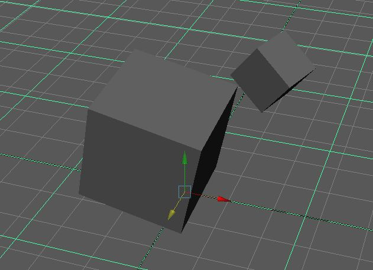

Effects
Imagine having an entire building crumble or animating an entire snow storm. It seems quite tedious to keyframe every single little detail. This is where effects come into play. When you do visual effects, you usually have to do some sort of simulation where you allow the computer to do most of the "animating" work for you. In actuallity, objects you are simulating are put through several formulas, solving for their positions and other various attributes each frame.
In this lab we'll be covering:
Rigid Body Simulation
Active Rigid Bodies
Active Rigid Bodies are objects that are affected by fields (such as gravity) as time passes. You can go into their attributes to change their resilience as well their friction values. Active Rigid Bodies can collide with each other as well as Passive Rigid Bodies.
Passive Rigid Bodies
Passive Rigid Bodies won't be affected by any fields, but can collide with other rigid bodies. A good example of a Passive Rigid Body is the ground. It doesn't fall with gravity (technically it does I guess...) but other ridig bodies can fall on it. Passive Rigid Bodies are useful because you can give them keyframes.
Fields (Rigid Body Simulation)
Fields are basically the forces you can apply to active rigid bodies. Say you want your object to fall according to gravity. You can just attach it to a gravity field. You can have fields attached to only specific objects as well. Or maybe you want some sort of vortex field? Also available in Maya. These fields come with many attributes to play with. Changes these numbers until you get the look you want!
Let's start with the basics.
Create a ground plane and two boxes just like this. Try to put the two boxes in a way that if they were to fall, would collide and cause each other to rotate. If you have them directly on top of each other, they just bounce straight up and down.
Let's make things move. You can create active bodies by selecting your objects then going Soft/Rigid Bodies->Create Active Rigid Bodies. But if you just select your objects and apply gravity to it, it should automatically make your objects into active rigid bodies.
When you press play on the scene, the blocks pass through the ground. Weird. Things aren't supposed to pass through the ground. The reason for this is that we haven't told the rigid body solver that the ground plane is a passive rigid body yet. We need to say that the ground needs to interact with other rigid bodies. Let's make the ground a passive rigid body. We can do this by going to Soft/Rigid Bodies->Create Passive Rigid Body.
Awesome. Now when you press play, the blocks should interact with the ground and with each other. Amazing. You didn't even have to set any keyframes.

Domino Blocks
In this lab we'll be trying to simulate some domino blocks falling. I've already created a scene for you to work off of. Which can be found here:
First of all, make sure you set your project, of course, and then make sure you're on the dynamics menu set.
From there we can see there's a Soft/Rigid Bodies Menu that shows up. This will be VERY useful for this next section. If you know that you'll be working with this menu a lot, it is possible to just pop out this menu by clicking the dashed-line option in the menu.
Remember the difference between Active and Passive Rigid Bodies.
Select the first domino on the track and create an Active Rigid Body. This means that this domino will be affected by connected fields and collisions with other rigid bodies. If you press play at this point, nothing should happen as there are no forces in effect.
Have your first domino selected and go to Fields → Gravity.
Simulate again by hitting the play button. You'll see that the domino just falls straight through. Why isn't it colliding with the track?
We have yet to tell the rigid body solver to have the active rigid bodies interact with the track as a passive rigid body. We know the track will act as the ground and not move from gravity so we can set that as a Passive Rigid Body. You can either go to Rigid/Soft Body → Passive Rigid Body or just click on the option in the pop out menu. Make sure you have the track selected first of course.
Remember, another feature of passive rigid bodies is that you can animate them with keyframes. Create another passive rigid body sphere to bump into the dominos and initiate the domino effect. Key it to collide with the first domino. Watch the domino get knocked over!
Now what you can do is grab all the other dominoes and make them active rigid bodies. You can easily do this by selecting all of them (except the first domino, as that's an active rigid body already) and connect it to the gravity field. Play the simulation again and watch as more domnioes fall!
The more objects you have, the slower the simulation will be as there will be more objects to calculate for.
Baking
Once you find a simulation of your liking, bake it. Baking your simulation basically goes through a pass of your simulation, but at every specified step (every frame, for example), Maya will set a keyframe for all the objects you are baking. This saves time as you won't have to solve for simulation anymore. Think of it like laminating your effect. Unfortunately, you can't change the parameters of your simulation anymore at this point. To do this, you first select all the objects you want to bake the simulation for. Then go to Edit → Keys → Bake Simulation (option box). You'll see that you can set the sample rate and the time range.
Rigid Body Simulations can be a very powerful tool if used correctly and efficiently.
Particle Simulation
Particles
Particles can be a powerful tool in computer graphics. You can use them as dust, liquid, or even to instance bigger geometry for each particle. Particles are basically points in 3D space that can't really be seen when rendered unless given some sort of shape or object to be instanced at each point. They are usually used concurrently with emitters and fields. Just like objects, you can apply shaders to particles as well.
Emitters
Emitters take in a particle object and shoot them out according to specified options. You can emit particles omni-directional, at a certain direction, or even from a surface of an object. It really depends on the settings you apply onto the emitter.
Fields (Particle Simulation)
Similarly to rigid bodies, there aren't any forces affecting your particles at the moment. Thus, they just fly out into space with initial velocity and do not accelerate in any way. Fields are areas that affect objects in certain ways to simulate these forces in Maya. You can set them to affect only the objects that you attach these fields to.
Each field has their own properties and behavior. Probably the best way to learn about them is to mess around each one. One of the most common fields is gravity, which is basically a force that pulls down on objects at a certain magnitude.
Make it Rain!
In this lab, we'll be attempting to make a rain effect. Don't expect to match the snapshots entirely, but try to get the particles to work the way you yourself want.
Make sure drop down menu is on dynamics.
Start by opening your outliner
Make sure the Linear units are set to centimeters as scale is very important in effects. This setting is found in Window → Settings/Preferences → Preferences → Settings.
Make sure also to set time slider playback speed to play every frame by 1 frame at a time. Max speed at 24 fps. Why do we do this? It's because particles need to use every frame to calculate the next position it's supposed to be in. Basically, a particle takes the position it's in the previous frame, and calculates it's current position according to it's speed and any acceleration that is applied on it. So to reset your particle simulation, you'll have to start at frame 1.
First create an emitter. Remember to name your objects! Name the emitter 'rainEmitter' and name the particles 'rainParticles'
Set timeline to go up to 300 frames. Scrub the slider to see particles flying out.
Make sure it is omni-directional (notice that it just spreads out). to do this, switch to attribute editor
Try increasing the rate of particles and see what that looks like.
Play with settings if you want. The best way to learn about particles is to experiment with the settings!
Change emitter type to be volume. if you scroll down in the emitter attributes, you can change the volume emitter attributes. Let's make the volume shape a cube.
Let's scale it more to a rectangular prism shape. Increase scale accordingly. Scrub the slider to check the particle movement.
Also translate the emitter up, so that the particles will be coming from the sky.
Decrease away from center attribute. This will make your particles not fly in different directions too much.
Select rainParticle in outliner and click Fields → Gravity. This gravity field also has a lot of attributes to mess with. If the droplets are not falling fast enough for you, increase magnitude.
If you scrub the time slider, you'll see that the particles no longer fly outward, but are being pulled down by the gravity field. Amazing! You can also turn up the magnitude in the attribute editor if you want the particles to fall faster.
Remember to reset the particles, start at frame 1.
Change the particle shape. Point particles are easier on the computer hardware, but giving them actual shape makes a big difference in the look and feel of the particles. Click on rainParticle, switch to attribute editor (ctrl+a).
Click on rainParticleShape tab and scroll down to Render Attributes.
Change Particle Render Type to Streak, then click Current Render Type button right under it. Change attributes accordingly.
Now we're going to make the rain hit the ground. First make plane polygon (rename it ground).
Scale it so that it covers the area the rain falls through.
If you just press play now, the rain just goes through the plane.
However, if you FIRST select the rainParticles then also select the 'ground' plane, then go to Particles → Make Collide.
If you play the scene now, we see that the particles bounce off the ground, maybe it's too bouncy though. The particles are acting more like bouncy balls than rain. So cool!
Select the 'ground' plane and we should see in the attribute editor a geoConnector1 tab. If we select that and lower the resilience attribute, the ground will be less deflective of the particles. Adjust until the rainParticles don't bounce off the ground too much.
Our rain effect is almost complete. one last thing to do is add more fields to give particle movement more randomness. This part I will leave up to you to play around with. It's more fun that way. Make sure you select your rainParticle first before you create the field. If not and you've already created your field. you can select the particle object and the field you want affecting it and go to Fields → Affect Selected Object(s) and the field should now be affecting those particles.
Other Common Fields:
Air Field - Acts like a fan or wind. You can adjust the area it affects and direction of the air.
Turbulence Field - This field adds randomness to the particle movement. Adjust the noise to change how random you want your particles to move.
Volume Axis - This field is special because it does a lot of what other fields do but only when particles are within it's area of effect.
Extra for Experts
Collision events
Collision events are basically scripts that run at the time a particle collides with another object.
Take the rain scene for example. Rain usually splatters into a few more droplets when it hits the ground.
So what we do is select our rainParticles and go to Particles → Particle Collision Event Editor.
Simply select emit as the emit type and adjust the Num Particles to about 2 or 3 then just create the event by clicking the Create Event button.
- Make sure new particles are affected by gravity
- Make sure new particles collide with ground
Play the scene and watch how your particles are affected.
Instancing
Another really neat thing particles can do is instance objects in their place. Maybe you happen to want to make it rain cat and dog models, or randomly shoot out a bunch of knives. The particle instancer is the way to go.
Here I am instancing teapots on the raindrops.
Teapots galore!
First create or import your object into the scene. It can be anything really. When you are ready, select your particle object and go to Particles → Instancer.
This will create an instancer object attached to your particles. Now what you can do is select the object that you want to instance in place of your particles and select your instancer second.
There should be a Add Selection button in the attribute editor. Just click that and you're ready to go!
Here's the teapot object you can import in. teapot.obj
Caching Particles
If you find yourself finalizing your particle movements and are annoyed of always reseting to frame 1 to see the animation at work, you can cache your particles.
Simply be in your dynamics Maya environment and select your particle objects, and go to Solvers → Cache particle disk cache.
What this will do is output a file that basically saves how your particles move from the frames you tell it to. Thus, Maya will not have to solve for particle movement every frame and have to be reset at frame 1.
By doing this, you can easily scrub through your particle animation!
Also here's a rain example I did here. rainTest.ma.
Awesome! Now you're a particles zen master!